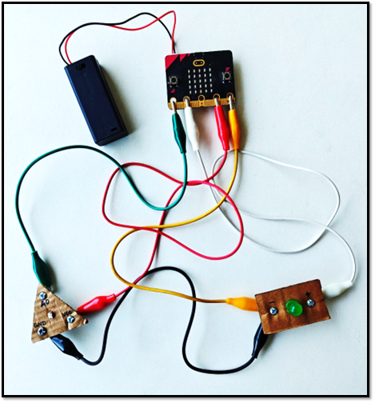

En la siguiente imagen se muestra las conexiones que se deben realizar para implementar la electrónica del presente proyecto. Además, se detalla las conexiones a continuación:
- El pin 0 del microbit conéctalo con la terminal A0 del módulo del sensor de luz.
- El pin 1 del microbit conéctalo con la terminal positiva del módulo LED.
- El pin 3V del microbit conéctalo con la terminal VCC del módulo del sensor de luz.
- El pin GND del microbit conéctalo con la terminal negativa del módulo LED.
- La terminal GND del módulo LED conéctalo con la terminal GND del módulo del sensor de luz.